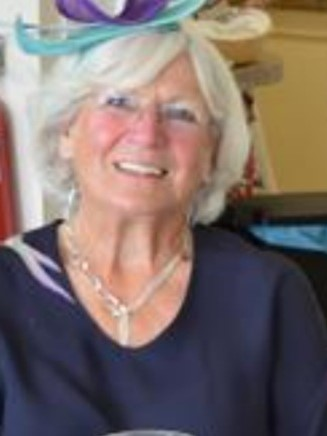
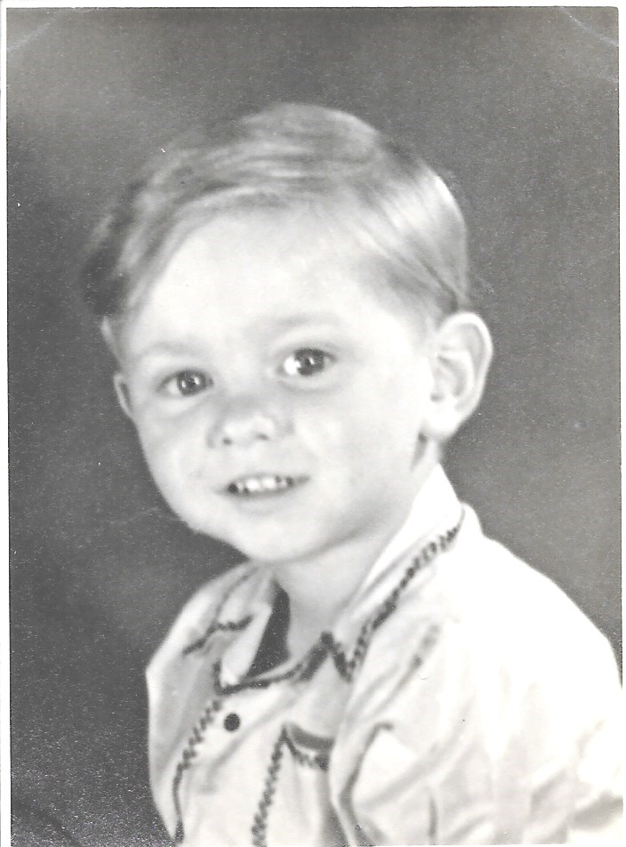
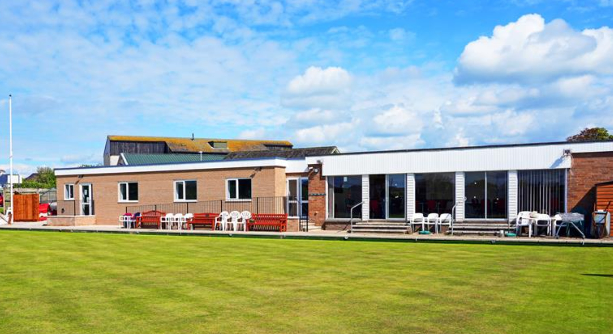

The Bridge Section of the LMBC was founded in 2021 as the brainchild of two young lady members of the club, namely Gill Daniels and Jenny Young. Their drive and sociable nature have been at the root of the club's success.

The initial movements for the club were developed by Eric Sparks. As the club grew these were enhanced by Andy Dick. Andy also introduced an electronic method of scoring using a laptop programme and Android tablets on each table.


The section meets on at 1.30 on Friday afternons and although limited in space it has grown to 32 members and regularly has 5 Tables.